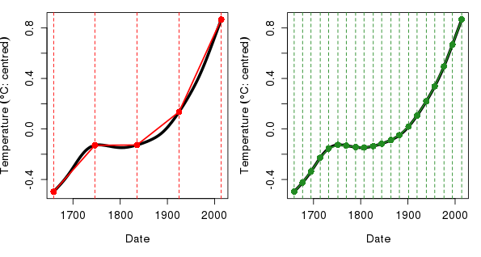
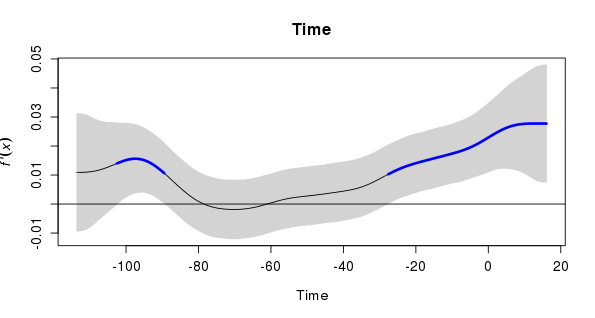
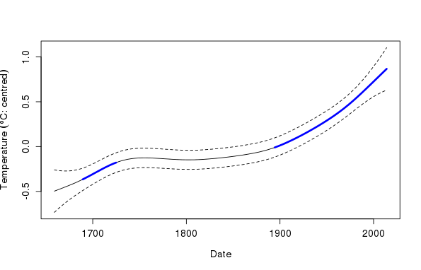
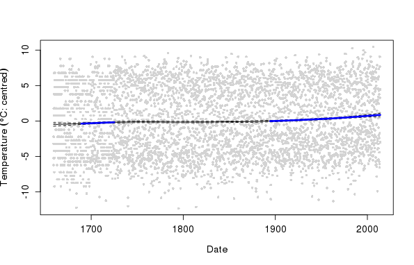

Identifying periods of change in time series with GAMs
Posted in
Tagged
Blogroll
In previous posts (here and here) I looked at how generalized additive models (GAMs) can be used to model non-linear trends in time series data. In my previous post I extended the modelling approach to deal with seasonal data where we model both the within year (seasonal) and between year (trend) variation with separate smooth functions. One of the complications of time series modelling with smoothers is how to summarize the fitted model; you have a non-linear trend which may be statistically significant but it may not be increasing or decreasing everywhere. How do we identify where in the series that the data are changing? That’s the topic of this post, in which I’ll use the method of finite differences to estimate the rate of change (slope) in the fitted smoother and, through some mgcv magic, use the information recorded in the fitted model to identify periods of statistically significant change in the time series.
Catching up
First off, if you haven’t already done so, go read my post on modelling seasonal data with GAMs as it provides the background info on the data and the model that I’ll be looking at here but also explains how we fitted the model etc. Don’t worry; you don’t need to run all that code to follow this post as I have put the relevant data processing parts in a Github gist that we’ll download and source() shortly.
OK, now that you’ve read the previous post we can begin…
To bring you up to speed, I put the bits of code from the previous post that we need here in a gist on Github. To run this code you can simply do the following
## Load the CET data and process as per other blog post
tmpf <- tempfile()
download.file("https://gist.github.com/gavinsimpson/b52f6d375f57d539818b/raw/2978362d97ee5cc9e7696d2f36f94762554eefdf/load-process-cet-monthly.R",
tmpf, method = "wget")
source(tmpf)
ls()[1] "annCET" "cet" "CET" "rn" "tmpf" "Years"
The gist contains code to download and process the monthly Central England Temperature (CET) time series so that it is ready for analysis via gamm(). Next we fit an additive model with seasonal and trend smooth and an AR(2) process for the residuals; the code predicts from the model at 200 locations over the entire time series and generates a pointwise, approximate 95% confidence interval on the trend spline.
ctrl <- list(niterEM = 0, msVerbose = TRUE, optimMethod="L-BFGS-B")
m2 <- gamm(Temperature ~ s(nMonth, bs = "cc", k = 12) + s(Time, k = 20),
data = cet, correlation = corARMA(form = ~ 1|Year, p = 2),
control = ctrl)
want <- seq(1, nrow(cet), length.out = 200)
pdat <- with(cet,
data.frame(Time = Time[want], Date = Date[want],
nMonth = nMonth[want]))
p2 <- predict(m2$gam, newdata = pdat, type = "terms", se.fit = TRUE)
pdat <- transform(pdat, p2 = p2$fit[,2], se2 = p2$se.fit[,2])
df.res <- df.residual(m2$gam)
crit.t <- qt(0.025, df.res, lower.tail = FALSE)
pdat <- transform(pdat,
upper = p2 + (crit.t * se2),
lower = p2 - (crit.t * se2))Note that I didn’t compute the confidence interval last time out, but I’ll use it here to augment the plots of the trend produced later.
First derivatives and finite differences
One measure of change in a system is that the rate of change of the system is non-zero. If we had a simple linear regression model for a trend, then the estimated rate of change would be \( \hat{\beta} \), the slope of the regression line. Then because we’re being all statistical we can ask questions such as whether the non-zero estimate we might obtain for the slope is distinguishable from zero given the uncertainty in the estimate. This slope or the estimate \( \hat{\beta} \) is the first derivative of the regression line. Technically, this is the instantaneous rate of change of the function that defines the line, an idea can be extended to any function, even one as potentially complex as a fitted spline function.
The problem we have though is that in general we don’t have an equation for the spline from which we can derive the derivatives. So how do we estimate the derivative of a spline function in our additive model? One solution is to use the method of finite differences, the essentials of which are displayed in the plots below

If you have heard of the trapezoidal rule for approximating the integral of a function, finite differences will be very familiar; instead of being interested in the area under the function we’re interested in estimating the slope of the function at any point. Consider the situation in the left hand plot above. The thick curve is the fitted spline for the trend component of the additive model m2. Superimposed on this curve are five points, between pairs of which we can approximate the first derivative of the function. We know the distance along the x axis (time) between each pair of points and we can evaluate the value of the function on the y axis by predicting from m2 for the times at the indicated time points. It is then trivial to compute the slope \( m \) of the lines connecting the points as the change in the y direction divided by the change in the x direction, or
\[ m = \frac{\Delta y}{\Delta x} \]
As you can see from the left hand plot, in some parts of the function the derivative is reasonably well approximated by this crude method using just five points, but in most places this approach either under or over estimates the derivative of the function. The solution to this problem is to evaluate the slope at more points that are located closer together on the function. The right hand plot above shows the finite difference method for 20 points, which for all intents and purposes produces an acceptable estimate of the first derivative of the function. We can increase the accuracy of our derivatives estimates by using points that are closer and closer together. At some point the points would be infinitely close and we’d know the first derivative exactly, except with a computer we can’t get to that point using the finite difference method.
To sum up, we can approximate the first derivative of a fitted spline by choosing a set of points \(p\) on the function and another set of points \(p \prime\) positioned a very small distance (say +10-5) from the first set. Using the predict() method with type = "lpmatrix" plus some other mgcv magic we can evaluate the fitted trend spline at the locations \(p\) and \(p \prime\) and compute the change in the function between the pairs of points and voilà we have our estimate of the first derivative of the fitted spline.
Confidence intervals on derivatives…?
Earlier, when discussing the simple linear regression line, I touched on the issue of error or uncertainty in the estimate of the slope parameter \(\hat{\beta}\) and how we allow for this in deciding whether the estimated rate of change was different from zero (technically: whether zero was a likely value for the slope given the model). The same issue concerns us with the first derivatives of the fitted spline; we still want to know where on the function the function is changing sufficiently that we can distinguish this change from no-change given our uncertainty knowledge of the function.
Thankfully, with a little bit of magic from mgcv we can compute the uncertainty in the estimates of the first derivative of the spline. I’ve encapsulated this in some functions that are currently only available as a gist on Github. I intend to package these up at some point with other functions for working with GAM(M) time series models. I’m also grateful to Simon Wood, author of mgcv, who provided the initial code to compute the derivatives and which I have generalized somewhat to the user to specify particular terms and to identify the correct terms from the model without having to count columns in the smoother prediction matrix.
To load the functions into R from Github use
## download the derivatives gist
tmpf <- tempfile()
download.file("https://gist.github.com/gavinsimpson/e73f011fdaaab4bb5a30/raw/82118ee30c9ef1254795d2ec6d356a664cc138ab/Deriv.R",
tmpf, method = "wget")
source(tmpf)
ls() [1] "annCET" "cet" "CET" "confint.Deriv"
[5] "crit.t" "ctrl" "Deriv" "df.res"
[9] "m2" "m2.d" "m2.dci" "m2.dsig"
[13] "op" "p2" "pdat" "plot.Deriv"
[17] "rn" "signifD" "take" "take2"
[21] "Term" "tmpf" "want" "Years"
[25] "ylab" "ylim"
I don’t intend to explain all the code behind those functions, but the salient parts of the derivative computation are
X0 <- predict(mod, newDF, type = "lpmatrix")
newDF <- newDF + eps
X1 <- predict(mod, newDF, type = "lpmatrix")
Xp <- (X1 - X0) / epsHere, newDF is a data frame of points along x at which we wish to evaluate the derivative and eps is the distance along x we nudge the points to give us locations \(p \prime\). type = "lpmatrix" forces predict() to return a matrix which, when multiplied by the vector of model coefficients, returns values fror the linear predictor of the model. The useful thing about this representation is that we can derive information on the fits or confidence intervals on quantities derived from the fitted model. Here we subtract one lpmatrix from another and divide these values by eps and proceed to do inference on those “slopes” directly.
The other critical bit of code is
for(i in seq_len(nt)) {
Xi <- Xp * 0
want <- grep(t.labs[i], colnames(X1))
Xi[, want] <- Xp[, want]
df <- Xi %*% coef(mod) # derivatives
df.sd <- rowSums(Xi %*% mod$Vp * Xi)^.5
lD[[i]] <- list(deriv = df, se.deriv = df.sd)
}This is where we compute the actual derivative and their standard errors. This is done in a loop as we have to work separately with the columns of the lpmatrix that relate to each spline. The first three lines of code within the loop are housekeeping that handle this part, with Xi being the matrix into which we insert the relevant values from the lpmatrix for the current term and contains zeroes elsewhere. Xi %*% coef(mod) gives us values of the derivative by a matrix multiplication with the model coefficients. Because irrelevant columns are 0 we don’t need to subset the coefficient vector, but we could make this more efficient by avoiding the copies of Xp by doing some further subsetting steps if we wished to.
The variances for the terms relating to current spline are computed using Xi %*% mod$Vp * Xi where mod$Vp is the covariance matrix of the (fixed effects) parameters of the GAM(M). These are summed and their square root take to give the standard error for the entire spline and not for each of the basis functions that comprise the spline. The last line of the loop just stores the computed derivatives and standard errors in a list that will form part of the object returned by the Deriv() function.
With that, most of the hard work is done. The confint.Deriv() method will compute confidence intervals for the derivatives from their standard errors and some information on the fitted GAM(M), the coverage of these intervals is given by \( 1 - \alpha \) with \( \alpha \) commonly set to 0.05, but this can be controlled via argument alpha. It is worth noting that these confidence intervals are of the usual pointwise flavour; they would be OK if you only looked at the interval for a single point in isolation but they can’t be correct when we look at the entire spline. The reason they can’t be correct for the entire spline is related to the issue of multiple comparisons and in effect, by looking at the entire spline we are making a lot of multiple comparisons of tests. We could compute simultaneous intervals but I haven’t written the functions to do it just yet; it’s not difficult as we can simulate from the fitted model and derive simultaneous intervals that way. That will have to wait for another post at a future date though!
There are two further trivial functions contained in the gist:
signifD()plows through the points at which we evaluated the derivative and looks for locations where the pointwise \( 1 - \alpha \) confidence interval doesn’t include zero. Where zero is contained within the confidence interval the function returns anNAand for points where zero isn’t included the value of the function (or the derivative, depending on what you supplied tosignifD()) is returned.The function gives you back a list with two components
incranddecrwhich contain the locations where the estimated derivative is positive or negative, respectively, and zero is not contained in the confidence interval. As you’ll see soon, we can use these two separate lists to colour the increasing a decreasing parts of the fitted spline.plot.Deriv()is an S3 method forplot()which will plot the estimated derivatives and associated confidence intervals. You can do this for selected terms via argumentterm. The confidence interval can be displayed as lines or a solid polygon via argumentpolygon. Other graphical parameters can be passed along via....The one interesting argument is
sizer, which if set toTRUEwill colour increasing parts of the spline in blue and in red for the decreasing parts (where zero is not contained in the confidence interval). These colours come from the siZer method.
Back to the CET example
With that taken care of, we can use the functions to compute derivatives, confidence intervals, and ancillary information for the trend spline in model m2 with a few simple lines of code
> Term <- "Time"
> m2.d <- Deriv(m2)
> m2.dci <- confint(m2.d, term = Term)
> m2.dsig <- signifD(pdat$p2, d = m2.d[[Term]]$deriv,
+ m2.dci[[Term]]$upper, m2.dci[[Term]]$lower)Most of that is self-explanatory, but the signifD() call, in lieu of any documentation yet, deserves some explanation. The first argument is the the thing you want to return in the incr and decr components. In this case I use the contribution to the fitted values for the trend spline alone pdat$p2. The argument d is the vector of derivatives for a single term in the model. The two remaining arguments1 are upper and lower which need to be supplied with the upper and lower bounds on the confidence interval respectively. Extracting all of that is a bit redundant when we could pass in the object returned by confint.Deriv() but I was thinking more simply when I wrote signifD() in a few dark days of number crunching when people were waiting on me to deliver some results.
A quick plot of the first derivative of the spline is achieved using

From the plot it is clear that there are two periods of (statistically) significant change, both increases, as shown by the blue indicators. However, with a plot like the one above you really have to dial in your brain to thinking about an increasing (decreasing) trend in the data when the derivative line is above (below) the zero line, even if the derivative is decreasing (increasing). As such, I have found an alternative display that combines a plot of the estimated trend spline with periods of significant change indicated by a thicker line with or without the siZer colours. You can see examples of such plots in a previous post.
That post used the lattice and ggplot2 packages to draw the plots. I still find it easier to just bash out a base graphics plot for such things unless I need the faceting features offered by those packages. Below I take such an approach and build a base graphics plot up from a series of plotting calls that successively augment the plot, starting with the estimated trend spline and pointwise confidence interval, then two calls to superimpose the periods of significant increase and decrease (although the latter doesn’t actually draw anything in this plot)
> ylim <- with(pdat, range(upper, lower, p2))
> ylab <- expression(Temperature ~ (degree*C * ":" ~ centred))
>
> plot(p2 ~ Date, data = pdat, type = "n", ylab = ylab, ylim = ylim)
> lines(p2 ~ Date, data = pdat)
> lines(upper ~ Date, data = pdat, lty = "dashed")
> lines(lower ~ Date, data = pdat, lty = "dashed")
> lines(unlist(m2.dsig$incr) ~ Date, data = pdat, col = "blue", lwd = 3)
> lines(unlist(m2.dsig$decr) ~ Date, data = pdat, col = "red", lwd = 3)
When looking at a plot like this, it is always important to have in the back of your mind a picture of the original data and how variance is decomposed between the seasonal, trend and residual terms, as well as the effect size associated with the trend and seasonal splines. You get a very different impression of the magnitude of the trend from the plot shown below, which contains the original data as well as the fitted trend spline.
> plot(Temperature - mean(Temperature) ~ Date, data = cet, type = "n",
+ ylab = ylab)
> points(Temperature - mean(Temperature) ~ Date, data = cet,
+ col = "lightgrey", pch = 16, cex = 0.7)
> lines(p2 ~ Date, data = pdat)
> lines(upper ~ Date, data = pdat, lty = "dashed")
> lines(lower ~ Date, data = pdat, lty = "dashed")
> lines(unlist(m2.dsig$incr) ~ Date, data = pdat, col = "blue", lwd = 3)
> lines(unlist(m2.dsig$decr) ~ Date, data = pdat, col = "red", lwd = 3)
Yet, whilst small compared to the seasonal amplitude in temperature, the CET exhibits about a 1° increase in mean temperature over the past 150 or so years. Not something to dismiss as trivial.
Summing up
In this post I’ve attempted to explain the method of finite differences for estimating the derivatives of a function such as the splines of an additive model. This was illustrated using custom functions to extract information from the fitted model and make use of features of the mgcv package that allowed the estimation of standard errors for quantities derived from the fitted model, such as the first derivatives used in the post.
So far we’ve looked at fitting an additive model to seasonal data employing two smoothers in an additive model, the use of cyclic splines to represent cyclical features of the data, and estimation of an appropriate ARMA correlation structure to account for serial dependence in the data. Here we’ve seen how to identify periods of significant change in the trend term using the first derivative of the fitted spline. Where do we go from here?
One important improvement is to turn the pointwise confidence interval into a simultaneous one. There is one other feature potentially present in the data that we have thus far failed to address; we might reasonably expect that the seasonal pattern in temperature has changed with the increase in the level of the series over time. To fit a model that includes this possibility we’ll need to investigate smooth functions of two (or more) variables as well as look in more detail at how to build more complex GAM(M) models with mgcv. I’ll see about addressing these two issues in future posts.
Footnotes
There’s a further argument,
eval, which contains the value you wish to test for inclusion in the coverage of the confidence interval. By default this is set to0.↩︎
Social